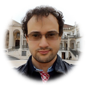

Fernando Lucatelli Nunes
I work in computer science and pure mathematics. I develop foundations of computer science, especially in programming language semantics, formal methods, and software technology, with an emphasis on solutions that are correct by construction and suitable for direct implementation. In mathematics, I study the theory and applications of generalised categorical structures, both intrinsically and through their connections with other areas of mathematics. These directions fuse into a single research programme, in which abstract theory and practical problems develop in close dialogue.
ResearchResearch statement, publications, preprints, and related writings.
Projects and collaborationsIndependent research programme, fellowships, funded projects, and collaborations.
Ph.D. studentsCurrent and former doctoral supervision.
Selected talksInvited, plenary, seminar, and workshop talks.
Academic positions and staysAppointments, affiliations, visits, and doctoral appointments.
Seminars and eventsSeminars and conferences, including CLASS, an international group for doctoral learning and research exchange.
Mathematical genealogyExplore the genealogy chart and the Mathematics Genealogy Project.
Further informationExternal profiles, selected links, and contact.
I am happy to hear from prospective collaborators and Ph.D. students.
Get in touch fernandolucatellinunes [at] gmail [dot] com